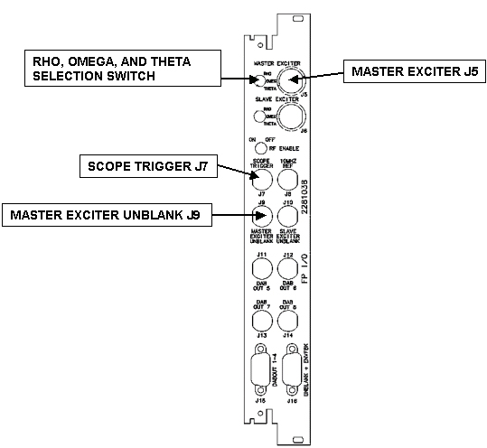
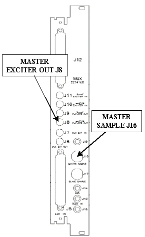
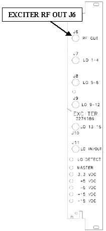

Proprietary to General Electric Company
Direction 5440000, Rev# 5
Signa HDxt Service Methods
Module Version 1.0, Version Date 4/26/07
Proprietary to General Electric Company |
This document permits the FE to quickly confirm waveform fidelity and general amplitude by comparing the scope waveform seen at the measured port to what is provided in the drawings in WaveForm Diagrams Examples.
The test ports to scope for specific waveforms are shown in Illustration 1, Illustration 2, and Illustration 3.
The Front Panel I/O Board Scope Trigger J7 is used whenever an external scope trigger signal is required.
Each scope waveform is displayed in WAVEFORM DIAGRAMS with the proper channel input selections, time base and triggering information.
Illustration 1: RRF FRONT PANEL I/O BOARD TEST PORTS

Illustration 2: RRF MUX BOARD EXCITER RF PORTS

Illustration 3: RRF MASTER EXCITER RF OUT PORT J6

Continue to Exciter Scan Preparation.